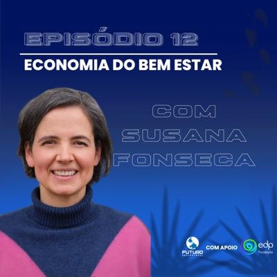

Nato Manzolli e Denner Déda exploram o conceito de economia do bem-estar e sua relação direta com a sustentabilidade. Em conversa com a socióloga Susana Fonseca, discutimos como colocar o bem-estar humano no centro das políticas e práticas econômicas pode transformar a sociedade. O episódio aborda desde os fundamentos teóricos até os desafios, oportunidades e implicações para políticas públicas, mostrando caminhos para uma economia mais justa, sustentável e voltada para as pessoas.
